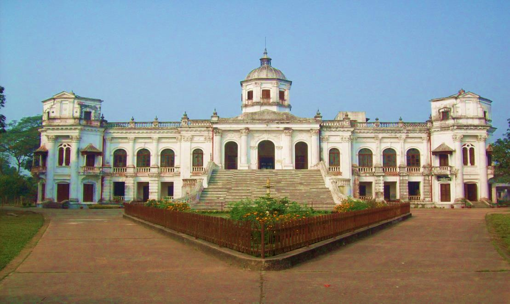

<p style="text-align: justify;">Tajhat is a historical place of Bangladesh, located near Lalbagh, Rangpur. It has a nice Jamidarbari(Palace) which in 2005 was turned into a museum. This museum is about 10 mins drive from Rangpur town, near Lalbagh. The Museum was inaugurated on March 20, 2005, by the Government of Bangladesh Minister for Cultural Affairs, Begum Selima Rahman and Secretary Mr. Mahmudul Masud. Dr. Alain Labrique of the Johns Hopkins University also made some invited remarks. The palace in Tajhat, commonly known as Tajhat Rajbari was built by Maharaja Kumar Gopal Lal Roy in the beginning of the 20th century. Many interested people visit this place happily.</p>
